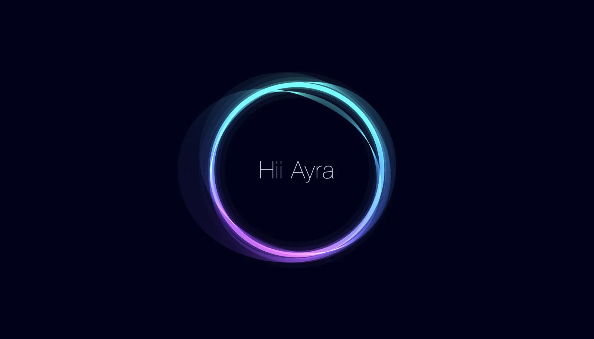

Voice agent · personal project
Ayra, a voice assistant you can interrupt
It talks like a person and works like a careful assistant. Interrupt it mid-sentence, ask it to check Maps or read your email, and it only sends or buys something after you say yes.
22tools, plus web search
1spoken yes per email or order
₹1,000order limit, cash on delivery

Read the full storyHide the story
Problem
Voice assistants tend to be either slow or reckless. I wanted one I could cut off mid-sentence that still would never send an email or place an order by mistake.
Constraints
- Speech has to start fast, and stop the instant I cut in.
- It must never answer its own voice coming back through the microphone.
- Emails, web pages and news are untrusted text that could carry instructions.
What I did
- Deepgram Flux streams the microphone and decides when I have finished speaking. Words it would mishear are boosted: contacts, “Ayra”, “Swiggy”, “Instamart”. Low-confidence sounds are ignored.
- Claude Haiku runs inside a LangGraph agent with conversation memory, so follow-ups work. Ayra starts speaking after Claude's first clause and says “Let me check” while a tool runs.
- Sarvam AI's Bulbul v4 gives a natural Indian English voice. Padding and kept-awake Bluetooth headphones stop words being clipped.
- “Stop”, “wait” or “Ayra” cuts it off mid-sentence, and so does clicking the page or pressing Enter. Echo protection stops it hearing itself.
What you can ask
TimeDate and time in any timezone.
WeatherToday, or up to 16 days ahead, for any place.
RemindersSet, list and cancel. Cancelling several asks first.
MapsAddresses, directions by car, on foot or transit, and nearby places.
GmailSearch, read, draft to a contact, and send only after your spoken yes.
ContactsMatch misheard names: “Saikran” finds “Sai Kiran”.
Quick answers166 currencies, unit conversion, tech and AI headlines, web search.
SwiggyOrder history, live tracking, search, cart and a full order read-back.
Safety, enforced in code
These rules sit in the program, so the model cannot talk its way around them.
- Emails and Swiggy orders need your yes in the very next reply, to the exact read-back.
- Emails, web pages and news cannot trigger emails, reminders or orders in the same turn, and email bodies are marked as untrusted.
- Email goes only to people in your contacts, and a subject line cannot add hidden recipients.
- Swiggy orders are cash on delivery only, within the ₹1,000 limit and the ₹99 Instamart minimum, with a final cart check and no automatic retries.
- Only sign-in tokens are saved, readable by you alone. Every tool is marked read or write and returns a short structured result with clear errors such as auth_expired or not_found.
Outcome
A working assistant with 22 tools plus web search, where every email or order takes exactly one spoken yes, and an interruption cancels both the writing and the speech.
Built with
Deepgram FluxClaude HaikuLangGraphSarvam AIGmail APIGoogle MapsOAuth 2.0
What I took from itRules that matter belong in code, not in the prompt. A model can be talked around, a check in the program cannot.